Мои концепты
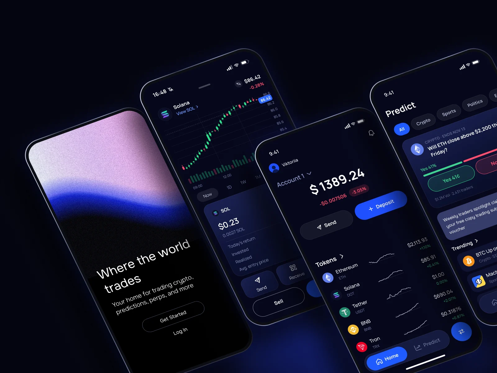
Трейдинговое приложение «Drift»
Приложение даёт вам полный контроль над своими цифровыми активами, позволяя мгновенно обменивать токены, торговать фьючерсами и подключаться к децентрализованным платформам прямо с мобильного телефона.
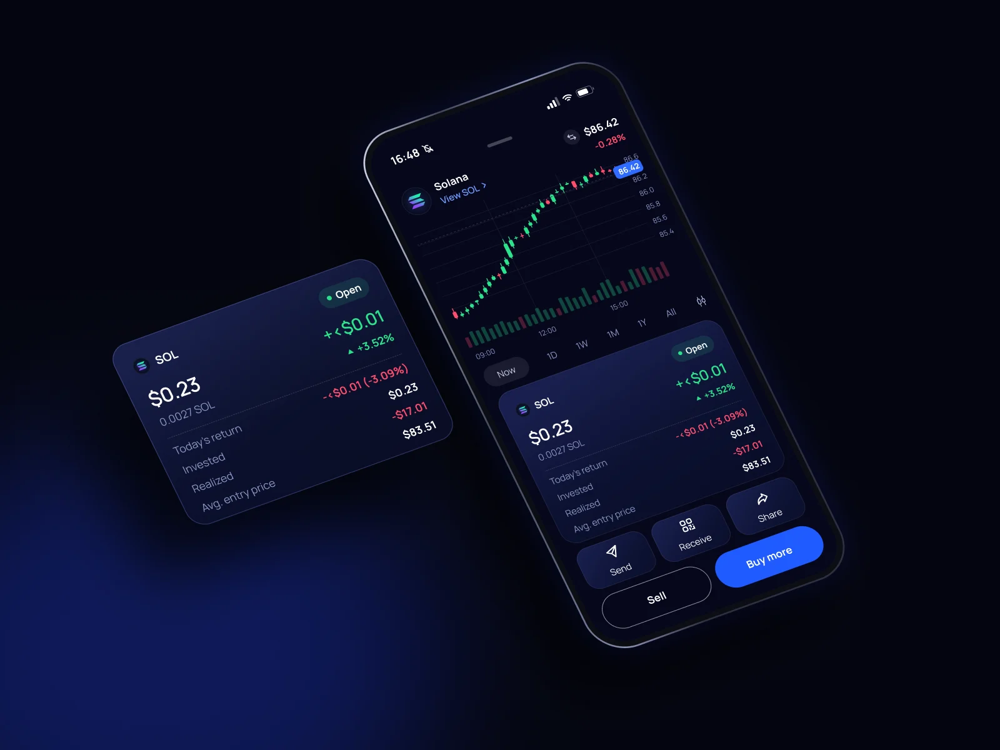
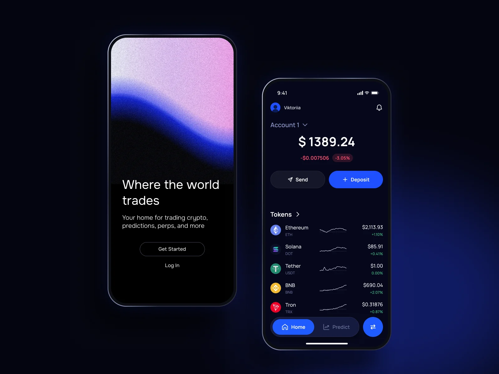
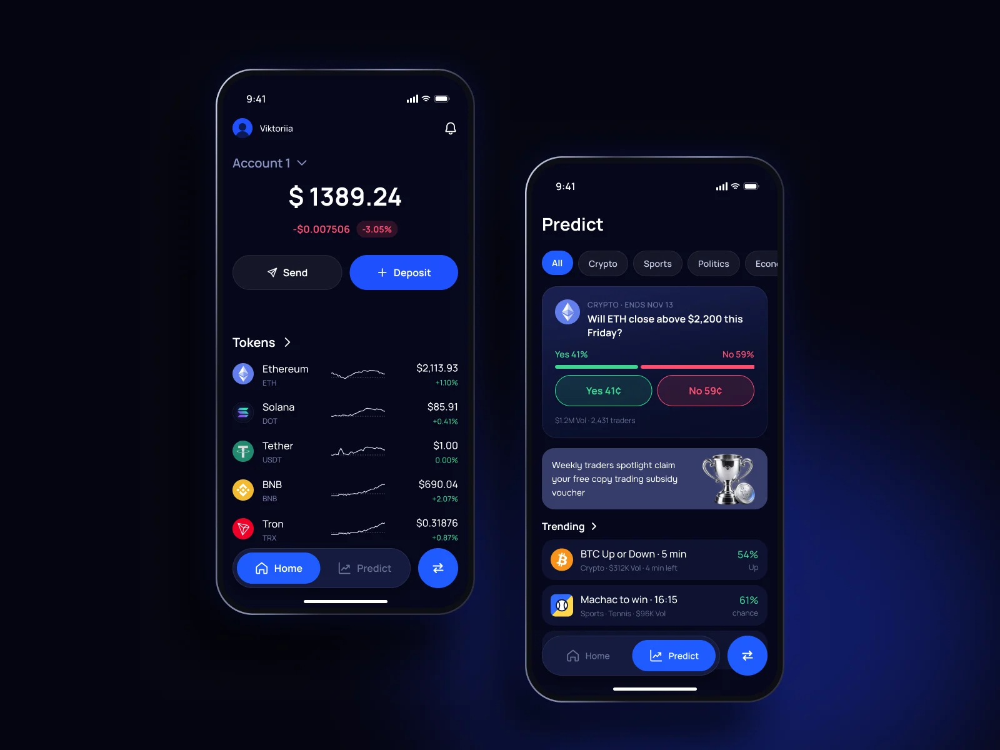
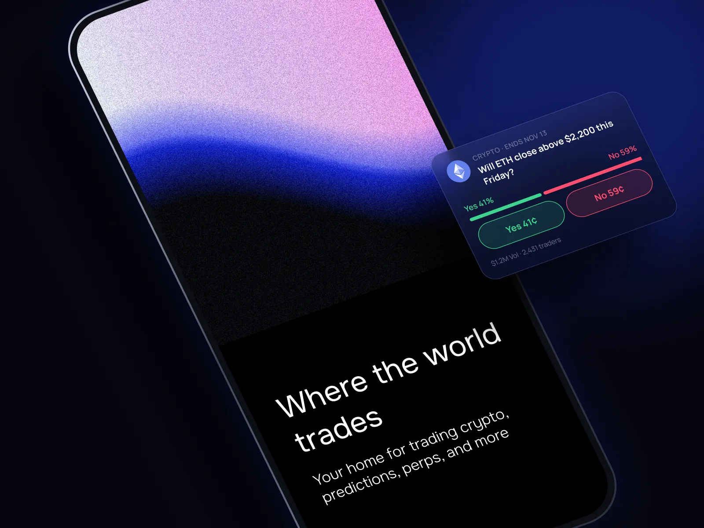
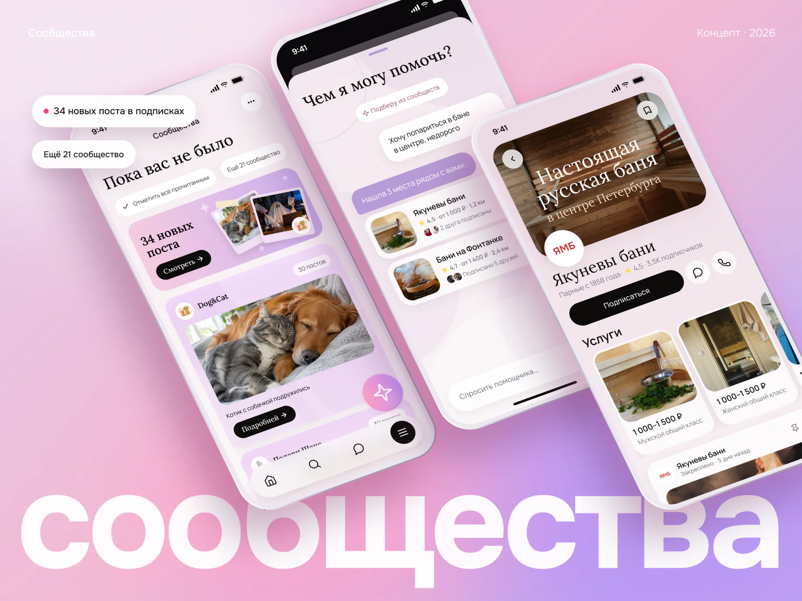
Сообщества
Лента собирает всё, что появилось в ваших сообществах, пока вас не было. А ИИ-помощник по одной фразе подбирает места из сообществ и показывает, где уже подписаны друзья.
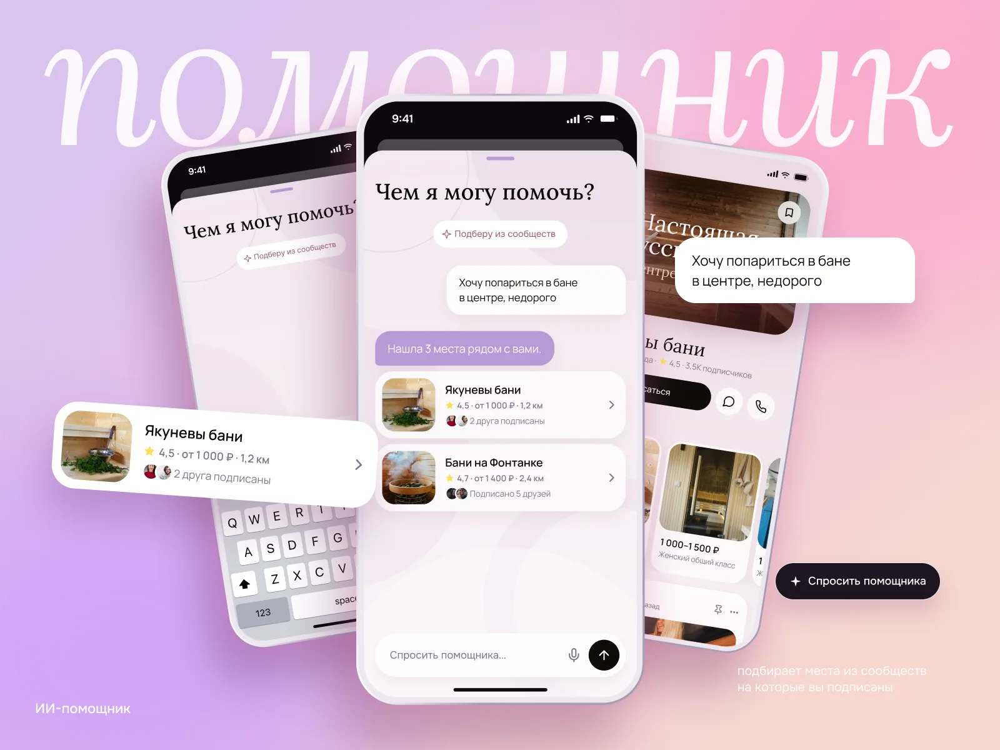
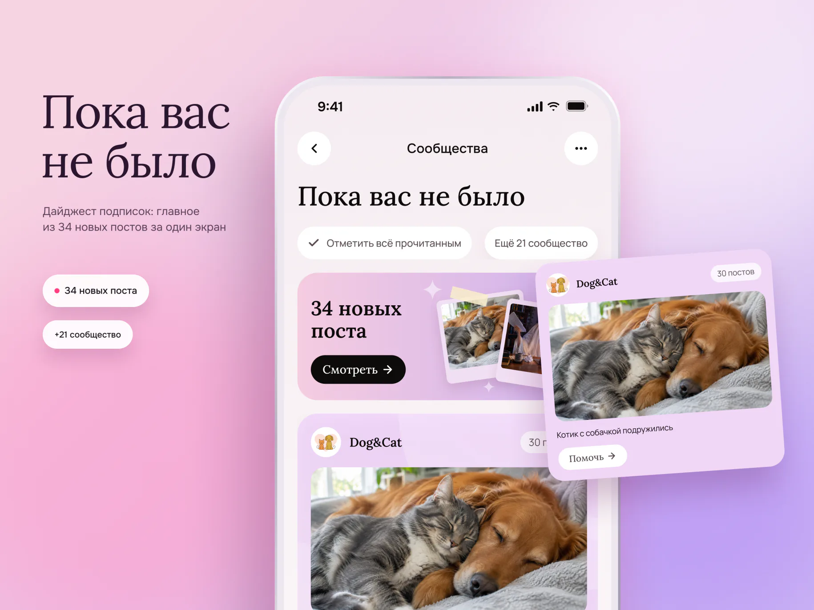
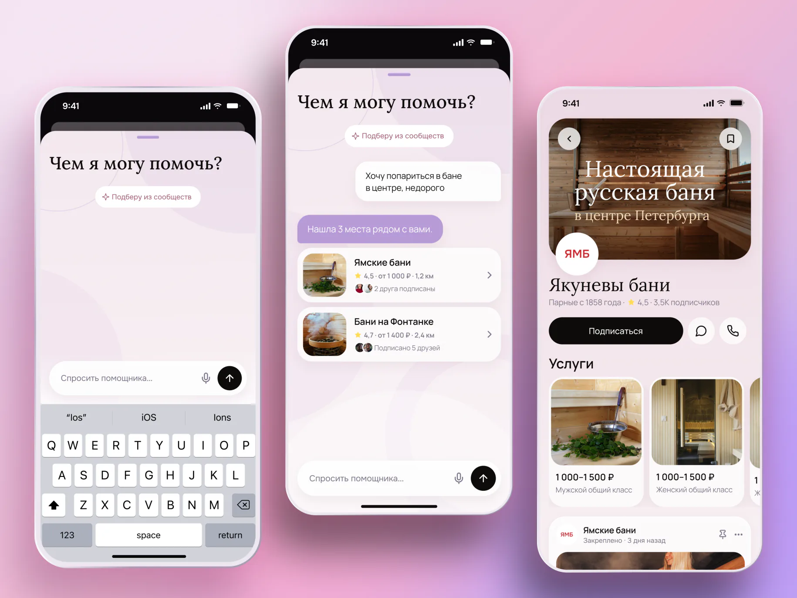
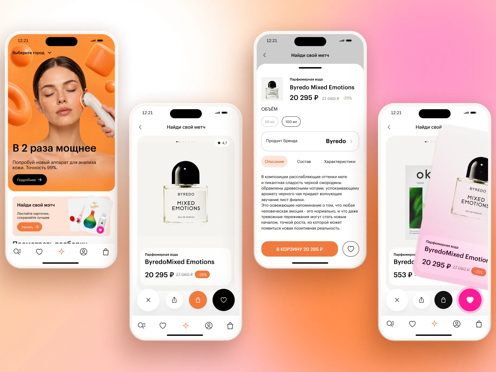

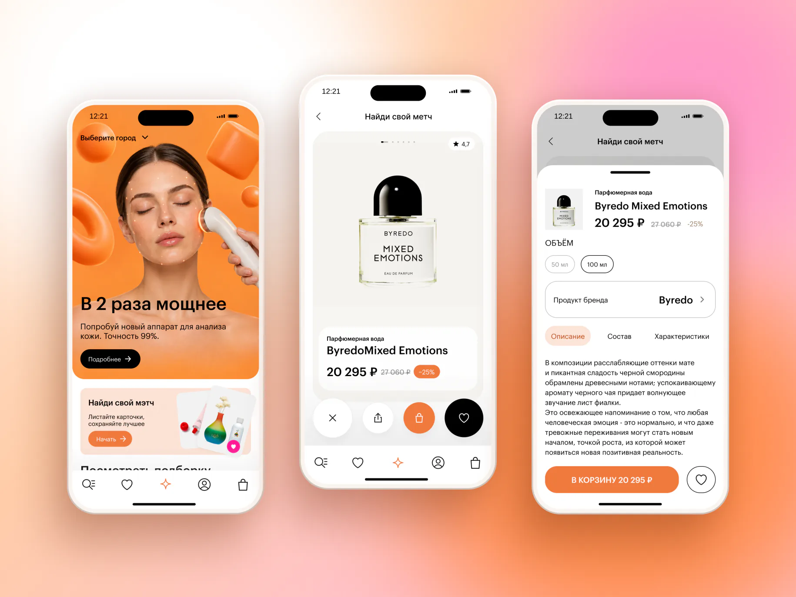
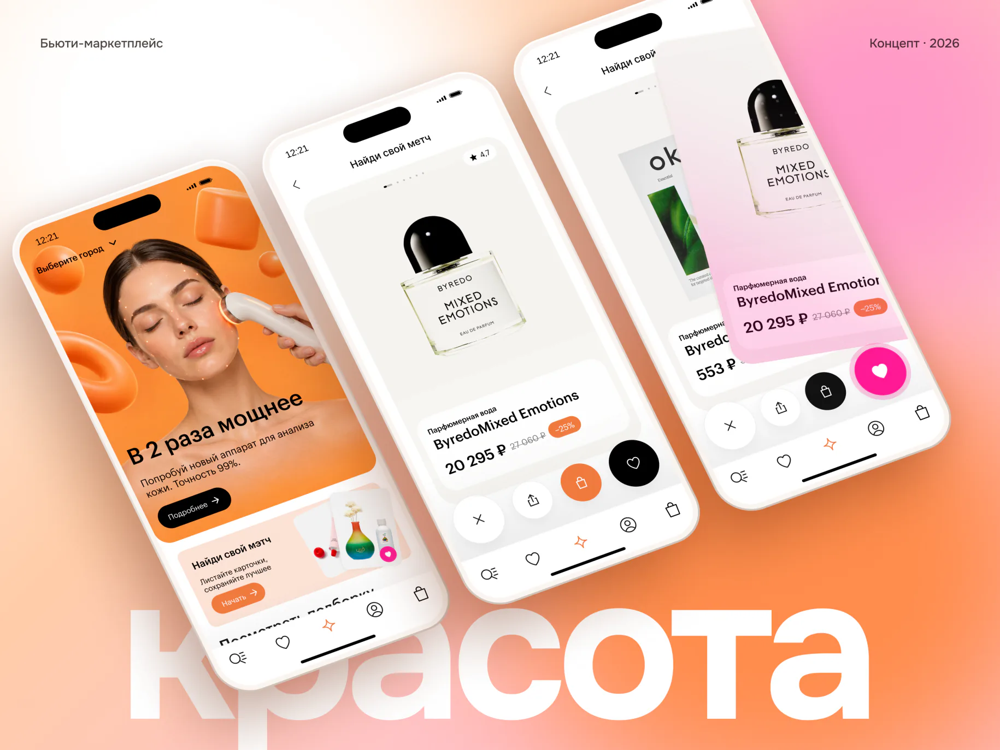